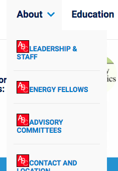
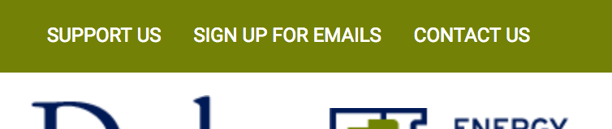
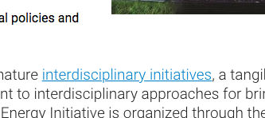

Screenshot:
Table of Contents
Link text (and alternate text for images, when used as links) that is discernible, unique, and focusable improves the navigation experience for screen reader users. Learn more.
<a> link has no text and its image has no alt attribute.Empty links with no text and an image with no alt text will read "Link Image" to screen reader users. As a result, they will not know what the link does or what is in the image.
Visual location:

HTML location:
<a href="http://duke.edu"><img alt="" src="/sites/all/themes/energy/images/duke-logo.png"></a>Add an alt attribute to image or add invisible screen reader text.
Add alt="Go to Duke.edu" to image.
Additional debugging details
Selector:
7,HTML,2,BODY,1,DIV,0,HEADER,1,DIV,0,DIV,0,DIV,0,DIV,0,A
Path:
#duke-logo > a[href$="duke.edu"]
More detailed explanation:
Fix all of the following:
Element is in tab order and does not have accessible text
Fix any of the following:
Element does not have text that is visible to screen readers
aria-label attribute does not exist or is empty
aria-labelledby attribute does not exist, references elements that do not exist or references elements that are empty or not visible
Element's default semantics were not overridden with role="presentation"
Element's default semantics were not overridden with role="none"
<a> link has no text and its image has no alt attribute.Empty links with no text and an image with no alt text will read "Link Image" to screen reader users. As a result, they will not know what the link does or what is in the image.
Visual location:

HTML location:
<a href="/"><img alt="" src="/sites/all/themes/energy/images/energy-logo.png"></a>Add an alt attribute to image or add invisible screen reader text.
Add alt="Energy home" to image.
Additional debugging details
Selector:
7,HTML,2,BODY,1,DIV,0,HEADER,1,DIV,0,DIV,0,DIV,1,DIV,0,A
Path:
:root
More detailed explanation:
Fix all of the following:
Element is in tab order and does not have accessible text
Fix any of the following:
Element does not have text that is visible to screen readers
aria-label attribute does not exist or is empty
aria-labelledby attribute does not exist, references elements that do not exist or references elements that are empty or not visible
Element's default semantics were not overridden with role="presentation"
Element's default semantics were not overridden with role="none"
<a> link has no text and its image has no alt attribute (x 5).Empty links with no text and an image with no alt text will read "Link Image" to screen reader users. As a result, they will not know what the link does or what is in the image.
Visual location:

HTML location:
<a href="http://trinity.duke.edu"><img alt="" src="/sites/all/themes/energy/images/trinity.png"></a><a href="http://www.fuqua.duke.edu"><img alt="" src="/sites/all/themes/energy/images/fuqua.png"></a><a href="http://pratt.duke.edu"><img alt="" src="/sites/all/themes/energy/images/pratt.png"></a><a href="https://nicholas.duke.edu"><img alt="" src="/sites/all/themes/energy/images/nicholas.png"></a><a href="https://law.duke.edu"><img alt="" src="/sites/all/themes/energy/images/law.png"></a><a href="http://sanford.duke.edu"><img alt="" src="/sites/all/themes/energy/images/sanford.png"></a>Add an alt attribute with an accurate description to image or add invisible screen reader text.
Additional debugging details
Selector:
7,HTML,2,BODY,1,DIV,2,DIV,0,DIV,2,DIV,0,DIV,0,DIV,4,DIV,1,UL,0,LI,0,A
Path:
.duke-logo:nth-child(1) > a[href$="trinity.duke.edu"]
More detailed explanation:
Fix all of the following:
Element is in tab order and does not have accessible text
Fix any of the following:
Element does not have text that is visible to screen readers
aria-label attribute does not exist or is empty
aria-labelledby attribute does not exist, references elements that do not exist or references elements that are empty or not visible
Element's default semantics were not overridden with role="presentation"
Element's default semantics were not overridden with role="none"
<a> link has no text inside (x 6).There are some social media icons that are not visible. Even though they are not visible, they still throw an error and false positives have been used in litigation to prove accessibility issues, so it will need fixed anyway.
Visual location:
Hidden in the green band at the top of the page near the search icon.
HTML Location:
<div id="block-block-3" class="block block--block block--block-3">
<div class="block__content">
<ul id="top-social">
<li>
<a href="https://www.youtube.com/user/DukeUEnergy"></a>
</li>
<li>
<a href="https://twitter.com/dukeuenergy"></a>
</li>
<li>
<a href="https://www.facebook.com/DukeUEnergy"></a>
</li>
<li>
<a href="https://www.linkedin.com/groups?gid=2706359&home="></a>
</li>
<li>
<a href="/duke-energy-initiative.xml"></a>
</li>
<li id="desktop_search_callout">
<a href="#"></a>
</li>
</ul>
</div>
</div>Empty links are not read to a screen reader user, as a result, they will have no idea what the link does or where it would take them.
Option 1:
It is possible they are missing on purpose. If so, login to the Drupal website and remove Block-3 from the header region.
Option 2:
If they were accidentally deleted, and they get added back the anchors will need screen reader only text hidden inside them.
<div id="block-block-3" class="block block--block block--block-3">
<div class="block__content">
<ul id="top-social">
<li>
<a href="https://www.youtube.com/user/DukeUEnergy">
<span class="element-invisible">Visit us on YouTube</span>
</a>
</li>
<li>
<a href="https://twitter.com/dukeuenergy">
<span class="element-invisible">Visit us on Twitter</span>
</a>
</li>
<li>
<a href="https://www.facebook.com/DukeUEnergy">
<span class="element-invisible">Visit us on Facebook</span>
</a>
</li>
<li>
<a href="https://www.linkedin.com/groups?gid=2706359&home=">
<span class="element-invisible">Visit us on LinkedIn</span>
</a>
</li>
<li>
<a href="/duke-energy-initiative.xml">
<span class="element-invisible">Our RSS Feed</span>
</a>
</li>
<li id="desktop_search_callout">
<a href="#">
<span class="element-invisible">Search</span>
</a>
</li>
</ul>
</div>
</div>
Additional debugging details
Selector:
7,HTML,2,BODY,1,DIV,4,DIV,1,DIV,0,A
Path:
.twitter
More detailed explanation:
Fix all of the following:
Element is in tab order and does not have accessible text
Fix any of the following:
Element does not have text that is visible to screen readers
aria-label attribute does not exist or is empty
aria-labelledby attribute does not exist, references elements that do not exist or references elements that are empty or not visible
Element's default semantics were not overridden with role="presentation"
Element's default semantics were not overridden with role="none"
Low-contrast text is difficult or impossible for many users to read. Learn more.
This change will be a big win. Changing this one line of code will remove 22 errors from the page.
Element has insufficient color contrast of 4.01 (foreground color: #ffffff, background color: #F9F9F9, font size: 9.0pt, font weight: normal). Expected contrast ratio of 4.5:1
Visual location:

HTML location:
<ul id="main-menu" class="main-menu responsive-menu links"><li id="menu-item-886" class="menu-item menu-parent menu-item-primary first">
...
<li id="menu-item-886" class="menu-item menu-parent menu-item-primary first"><a href="/about" title="">About</a>
<ul class="sub-menu tier-two">
...
</li>
...Change the color to the closest possible color of #0677BD in the generated CSS.
#block-responsive-dropdown-menus-main-menu ul.main-menu li.menu-parent .hovered_item, #block-responsive-dropdown-menus-main-menu ul.main-menu li.menu-parent a {
display: block;
min-width: 100%;
width: 200px;
padding: 20px;
line-height: 1.2em;
text-decoration: none;
text-transform: uppercase;
- color: #0680cd;
+ color: #0677BD;
font-weight: bold;
font-size: 14px;
}Visual location:

HTML location:
<ul class="menu">
<li class="first leaf"><a href="/support-us" title="">Support Us</a>
</li>
<li class="leaf"><a href="/energy-initiative-email" title="">Sign Up for Emails</a></li>
<li class="last leaf active-trail"><a href="/contact-us" title="" class="active-trail active">Contact Us</a></li>
</ul>For :link state
Element has insufficient color contrast of 4.31 (foreground color: #ffffff, background color: #738106, font size: 9.0pt, font weight: normal). Expected contrast ratio of 4.5:1
Change the background color to the closest possible color #707D06 in the generated CSS.
.l-branding {
zoom: 1;
- background-color: #738106;
+ background-color: #707D06;
color: #fff;
line-height: 47px;
white-space: nowrap;
text-transform: uppercase;
}For :hover state
The hover state is missing. Try changing the existing selectors's color property value (this is the closest possible color to the original color):
.l-branding #block-menu-menu-top-nav a:hover {
- color: #596403
+ color: #0B0D02;
}
Additional debugging details
Selector:
7,HTML,2,BODY,1,DIV,0,HEADER,0,DIV,0,DIV,0,NAV,0,UL,0,LI,0,A
Path:
a[href$="support-us"]
For mouse users, links should have hover states to help indicate that an element can be clicked. This can be accomplished by using text-decoration, border, having a contrast ratio of 3:1 between the link and its surrounding body text, or other valid method. Learn more.
Touch screen users (Smart phones, tablets, etc) and keyboard-only users can not hover over text to discover which text is clickable and which is not.
Visual location:

Add :hover state of #067AC3 to generated CSS.
.page-home .l-content .panel-1col .panel-col #news .view-display-id-block .view-content .item-list ul li .views-field-created .title a:hover {
color: #067AC3;
}
Element has insufficient color contrast of 4.21 (foreground color: #0680cd, background color: #ffffff, font size: 14.3pt, font weight: normal). Expected contrast ratio of 4.5:1.
Visual location (one example):

Change color to closest compliant color of #0680A9:
a, a:visited {
cursor: pointer;
- color: #0680cd;
+ color: #0680A9;
}Visual location:

HTML location:
<a class="about-button" href="about">About</a>Element has insufficient color contrast of 4.31 (foreground color: #ffffff, background color: #738106, font size: 9.0pt, font weight: bold). Expected contrast ratio of 4.5:1.
Change background-color to closest compliant color of #707D06.
.page-home .l-content .panel-1col .panel-col .pane-1 .about-button {
display: inline-block;
clear: both;
margin-top: 1em;
font-size: 9px;
color: #fff !important;
padding: 15px 35px;
font-weight: 700;
text-decoration: none;
margin: 40px 0 30px 0;
text-transform: uppercase;
- background-color: #707D06;
+ background-color: #0B0D02;
letter-spacing: 0.38em;
font-size: 12px;
padding: 17px 41px;
}
Additional debugging details
Selector:
7,HTML,2,BODY,1,DIV,2,DIV,0,DIV,2,DIV,0,DIV,0,DIV,3,DIV,2,P,0,A
Path:
.about-button
More detailed explanation:
Fix any of the following:
Element has insufficient color contrast of 4.31 (foreground color: #ffffff, background color: #738106, font size: 9.0pt, font weight: bold). Expected contrast ratio of 4.5:1
There are a few important issues to fix regarding the menus. I have not had time to create suggested solutions for it yet. It is a complex issue. Not to worry! We will work it out together. Below are a few of the issues:
Offscreen content is hidden from assistive technology
Description:
Offscreen content is hidden with display: none or aria-hidden=true. Learn more.
At the moment the sub-navigation items are hidden off screen but still in the tab index, making it difficult or impossible for people with disabilities to navigate the web site.
[id] attributes on the page are not uniqueThe value of an id attribute must be unique to prevent other instances from being overlooked by assistive technologies. Learn more.
The module that generates the mobile navigation just dupliates the menu. It results in a few dozen duplicate IDs. Not to worry! This might have an easy solution.
Visual location:

HTML location:
<ul id="main-menu" class="main-menu responsive-menu links">Document has multiple elements with the same id attribute: main-menu in the mobile nav
Visual location:

HTML location:
<div class="slideRevealMenu doReveal">
<div>
<div class="top-bar">
...
</div>
<div class="ul-wrapper">
<ul id="main-menu" class="main-menu responsive-menu links" style="left: -198px;">
<li id="menu-item-886" class="menu-item menu-parent menu-item-primary first mouseover">
...
</li>
<li id="menu-item-881" class="menu-item menu-parent menu-item-primary">
<a href="/education" title="">Education</a>
<ul class="sub-menu tier-two">
<li class="collapse-menu"></li>
<a>Go Back</a>
</li>
<li class="landing-page">
<a href="/education">Education</a>
</li>
<li id="menu-item-882" class="menu-item menu-item-secondary first">
<a href="/education/programs">Degree Programs</a>
</li>
<li id="menu-item-885" class="menu-item menu-item-secondary">
<a href="/education/courses" title="">Courses</a>
</li>
<li id="menu-item-883" class="menu-item menu-item-secondary">
<a href="/education/bass-connections">Bass Connections</a>
</li>
<li id="menu-item-906" class="menu-item menu-item-secondary">
<a href="/education/extracurricular">Extracurricular</a>
</li>
<li id="menu-item-884" class="menu-item menu-item-secondary last">
<a href="/education/careers">Careers</a>
</li>
</ul>
</li>
<li id="menu-item-891" class="menu-item menu-parent menu-item-primary">
...
</li>
<li id="menu-item-877" class="menu-item menu-parent menu-item-primary">
...
</li>
<li id="menu-item-533" class="menu-item menu-item-primary">
<a href="/news" title="">News</a>
</li>
<li id="menu-item-534" class="menu-item menu-item-primary last">
<a href="/events" title="">Events</a>
</li>
</ul>
</div>
</div>
<div class="social-media-icons">
...
</li>
</div>
</div> <li id="menu-item-???">Notice how all the <li> have ID attributes. The module that generates the mobile navigation just dupliates the menu. It results in a few dozen duplicate IDs.
This might be an easy fix. Advice:
If the ID attributes are removed in the main menu, they will be removed in the mobile navigation too.
Additional debugging details
Selector:
7,HTML,2,BODY,1,DIV,0,HEADER,1,DIV,1,DIV,0,DIV,1,DIV,0,UL
Path:
.block__content > div > .main-menu.responsive-menu.links
Manual Test: HTML5 landmark elements are used to improve navigation
Description:
Landmark elements (<main>, <nav>, etc.) are used to improve the keyboard navigation of the page for assistive technology. Learn more.
Success.
Manual Test: Visual order on the page follows DOM order
Description:
DOM order matches the visual order, improving navigation for assistive technology. Learn more.
Textise is a neat tool for inspecting the natural order View this website on Textise of the website. If nothing has been done in JS to interfere the natural tab order, looking at that or viewing the source will basically follow the order of the markup.
Success.
Custom controls have associated labels
Description:
Custom interactive controls have associated labels, provided by aria-label or aria-labelledby. Learn more.
Not applicable.
Custom controls have ARIA roles
Description:
Custom interactive controls have appropriate ARIA roles. Learn more.
Not applicable.
Manual Test: The page has a logical tab order
Description:
Tabbing through the page follows the visual layout. Users cannot focus elements that are offscreen. Learn more.
Needs work. This will fix itelf by fixing the "Offscreen content is hidden from assistive technology" issue.
Manual Test: The user's focus is directed to new content added to the page
Description:
If new content, such as a dialog, is added to the page, the user's focus is directed to it. Learn more.
Needs work. This will fix itelf by fixing the "Offscreen content is hidden from assistive technology" issue.
Manual Test: User focus is not accidentally trapped in a region
Description:
A user can tab into and out of any control or region without accidentally trapping their focus. Learn more.
Success.
Site works cross-browser
Description:
To reach the most number of users, sites should work across every major browser. Learn more.
Success.
Manual Test: Interactive controls are keyboard focusable
Description:
Custom interactive controls are keyboard focusable and display a focus indicator. Learn more.
Needs work. This will fix itelf by fixing the "Offscreen content is hidden from assistive technology" issue.
There is enough work to do on the homepage. When issues get fixed on the homepage they will naturally propigate to the subpages. We can come back and review them later.
Adding alt tags is a good content related issue that people could start working on now. Usually that will not require the use of a developer.
The best place to start will the the high-traffic top level landing pages.
https://energy.duke.edu/education
https://energy.duke.edu/research